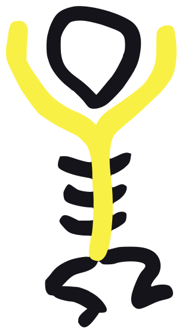
Data a confirmar
Evento anual
Tardezinha Inclusiva
Evento recreativo anual para crianças e adultos típicos e atípicos.
- Como participar
- Informações pelo WhatsApp do Professor Dinho
Eventos
Datas e novidades dos eventos do Ser Capoeira Inclusiva Adaptada. Os eventos são anunciados aqui e no Instagram.

(01) Agenda
Para participar ou tirar dúvidas, fale com o Professor Dinho pelo WhatsApp.

Data a confirmar
Evento anual
Evento recreativo anual para crianças e adultos típicos e atípicos.
Nenhum evento com data marcada no momento.
Os próximos eventos serão anunciados nesta página e no Instagram @ser_capoeira_jf (abre em nova aba).
Evento realizado · 22/11/2026
No domingo, 22 de novembro, o festival realizado pelo Tio Dinho e equipe reuniu alunos, famílias e capoeiristas no Colégio Sarah Dawsey, em Juiz de Fora. Teve roda de capoeira, entrega de cordas, certificados e medalhas e muito acolhimento — um dia para promover a inclusão, celebrar as diferenças e fortalecer laços.
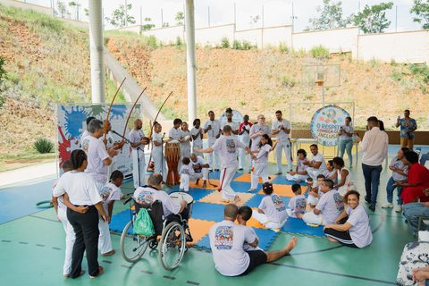
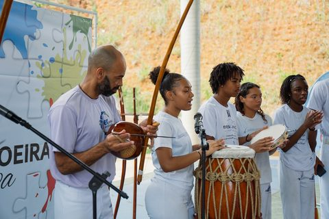
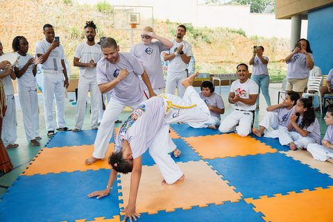
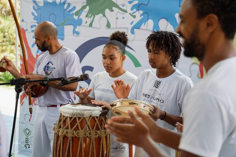
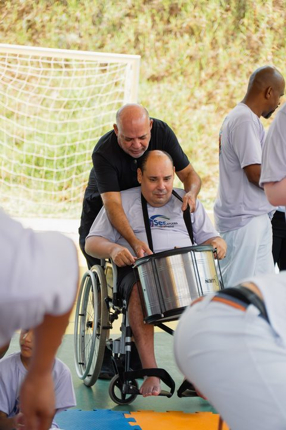
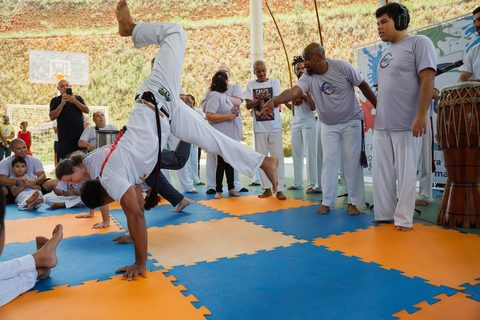
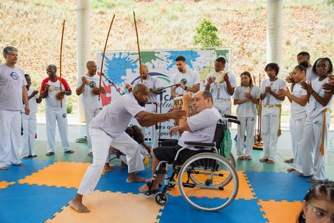
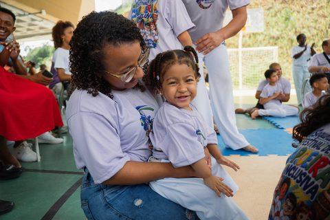
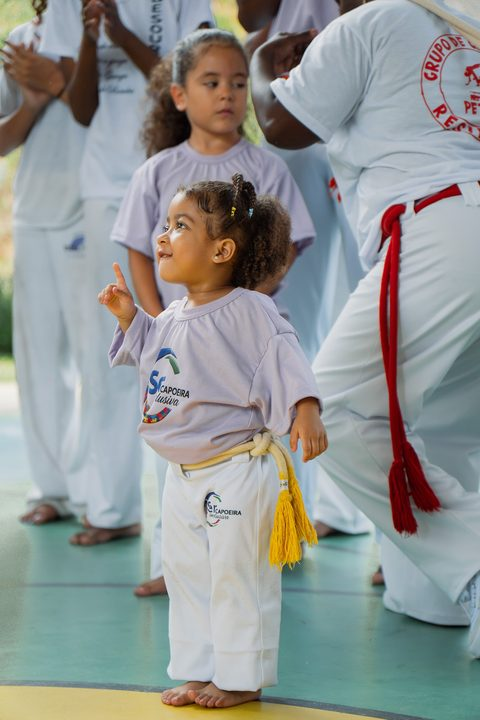
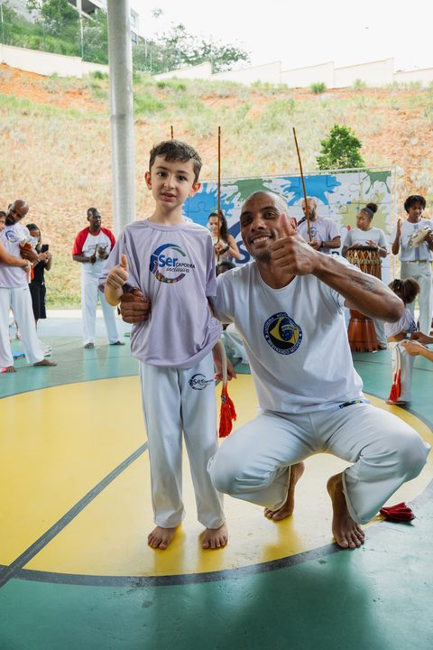
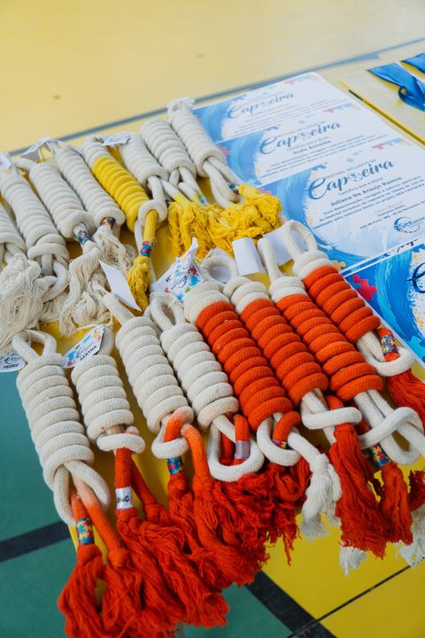
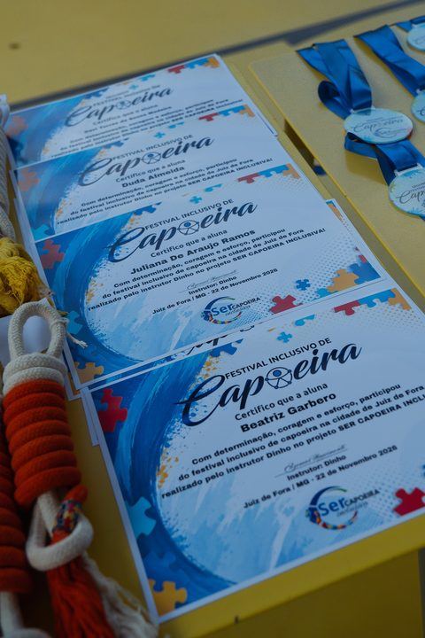
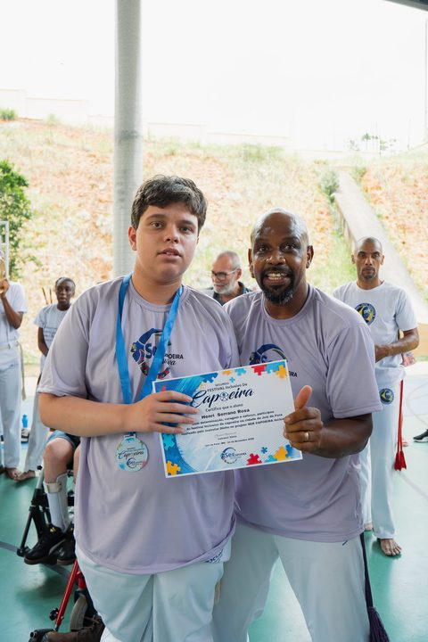
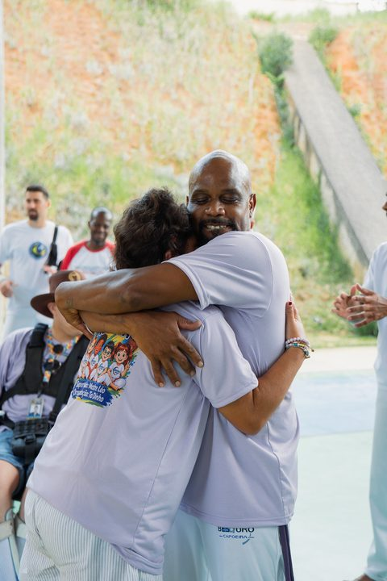
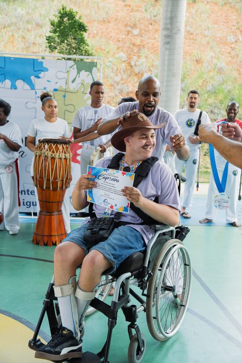
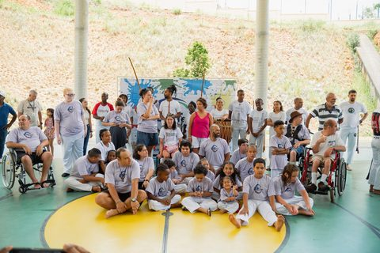
Estas empresas e parceiros patrocinaram o 2º Festival Inclusivo de Capoeira (22/11/2026). O apoio foi específico deste evento: eles não são patrocinadores fixos da instituição. Muito obrigado a todos!
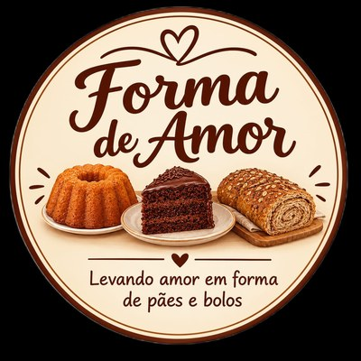
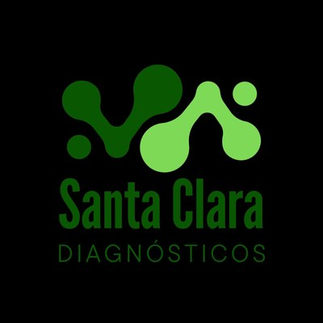
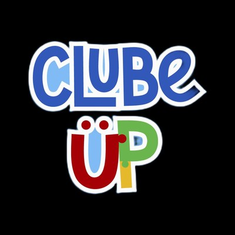
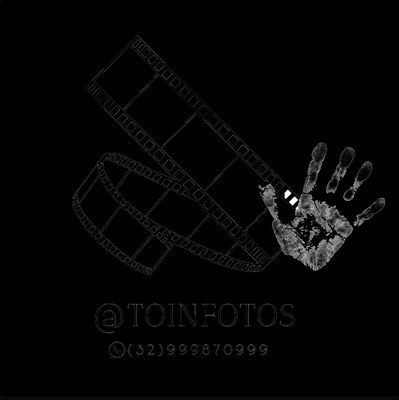
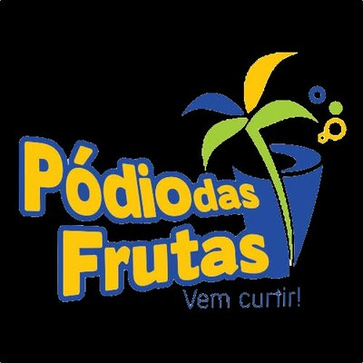
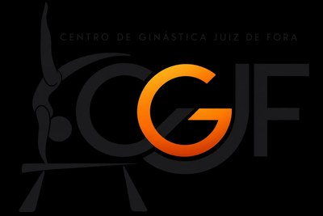
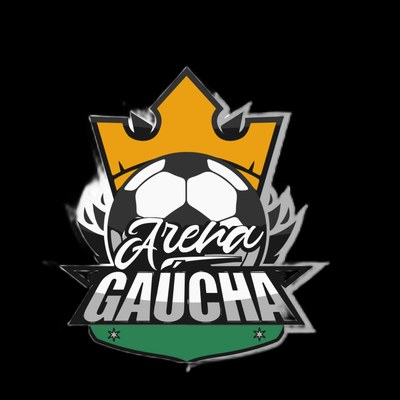
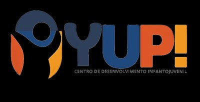
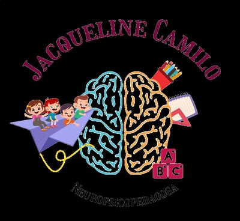
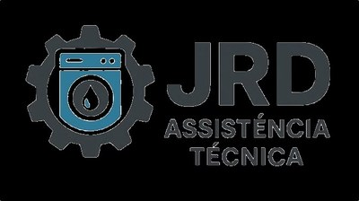
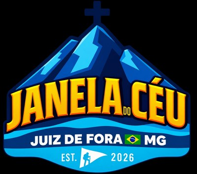
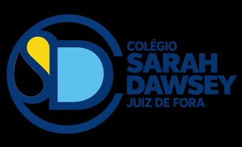
(02) Momentos
Registros de eventos e atividades do Ser Capoeira Inclusiva Adaptada.
Ver a galeria completa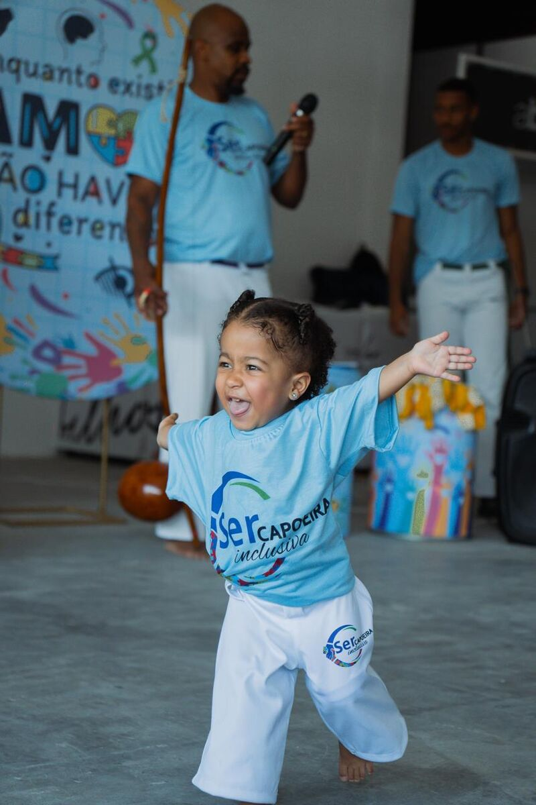
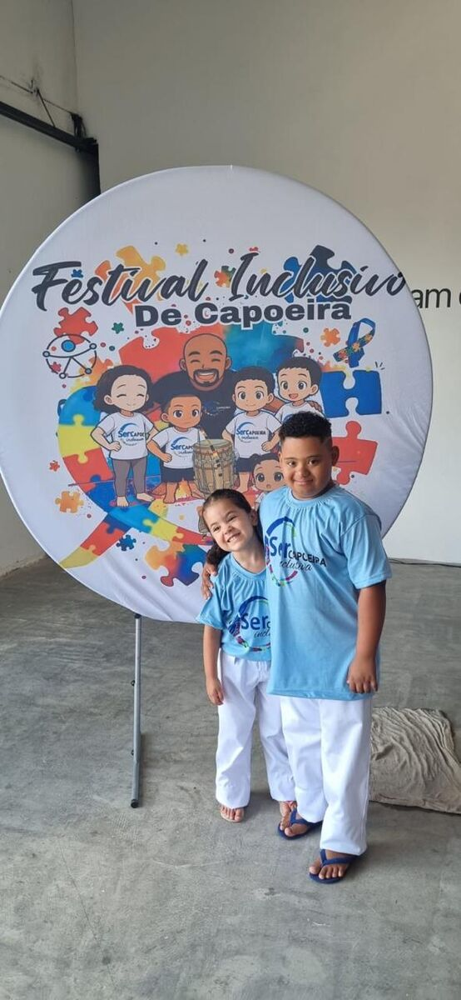
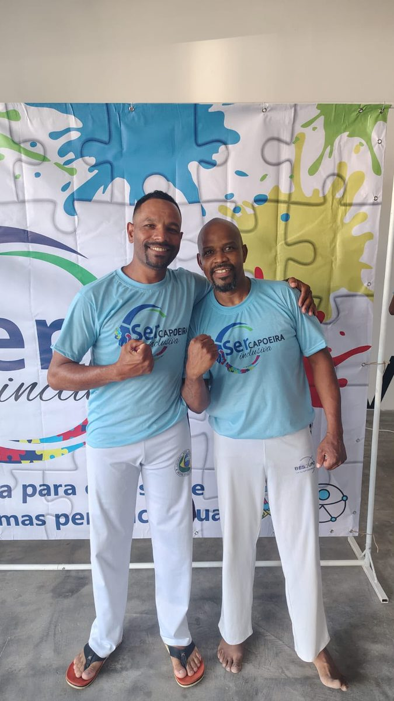
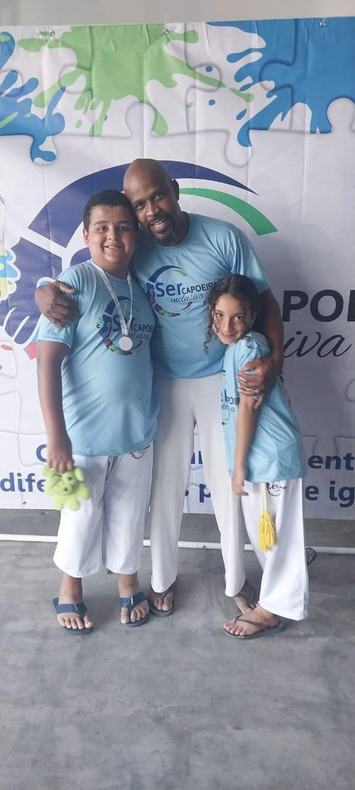
Faça parte
Fale com o Professor Dinho ou acompanhe as novidades no Instagram.